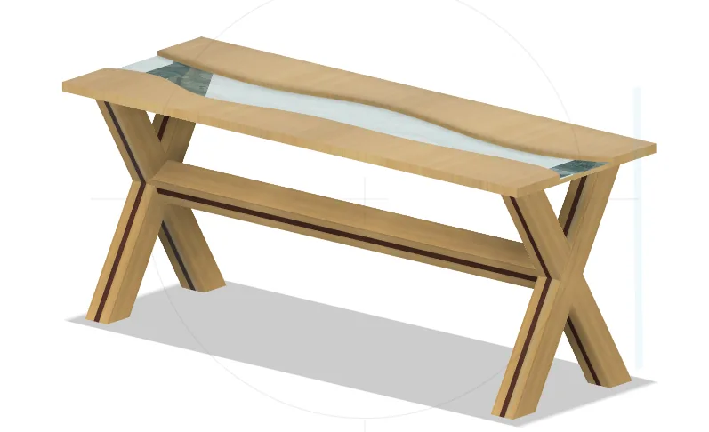
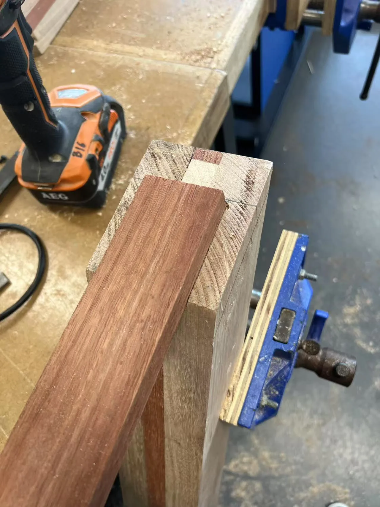
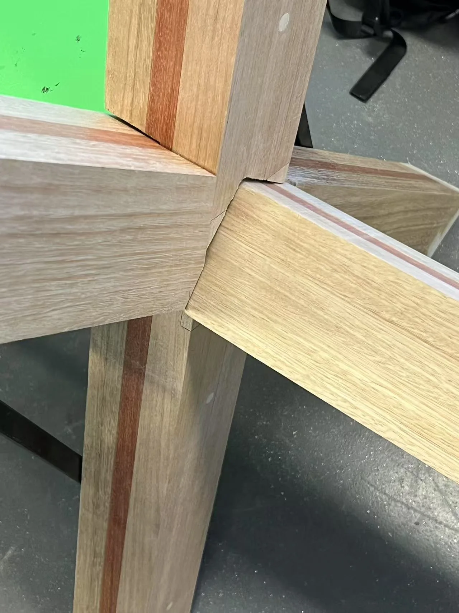
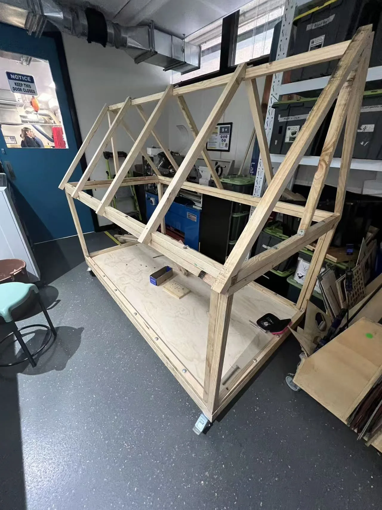

01 / DIGITAL3D modelling
Digital design development with Autodesk Fusion 360, exploring shape, assembly and material appearance.
I'm developing a foundation in building design and construction through academic study, original school projects and hands-on work with materials.

MAKING / 2025I finished Year 12 at Turramurra High School in 2025. My interests in construction and design grew through two major works: a mobile shelter prototype and an epoxy resin timber table.
I'm currently studying a Diploma in Building Design and Construction at Western Sydney University (2026–2027). My goal is to continue into Construction Management (Honours), course 3762, and eventually work in a project-coordination or site-focused role.
I don't claim formal construction-industry employment. The projects shown here are school work, presented with original visual evidence.
See the projects ↗Capabilities shown through original CAD design, workshop photography and completed student projects.

01 / DIGITALDigital design development with Autodesk Fusion 360, exploring shape, assembly and material appearance.

02 / PRACTICALTimber processing, accurate measurements, joinery, construction and surface preparation.

03 / STRUCTURALExperience building a small timber-framed prototype and understanding construction sequence.
Western Sydney University. Coursework continuing into 2027; current 2026 teaching period expected to conclude in mid-November.
Turramurra High School. Relevant studies included Design & Technology and Industrial Technology (Timber).
Western Sydney University — course 3762. Intended future progression; not claimed as current enrolment or completed study.